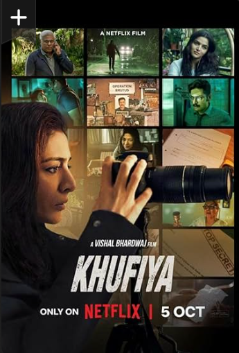

This riveting crime series won Best Drama at the International Emmy Awards,
Premios Fénix and Premios Iris (plus six more Iris wins). Videos. Money
Heist(to find the trailer click the image below)
Reunited by their father's death, estranged siblings with extraordinary powers
uncover shocking family secrets — and a looming threat to humanity.(click the
image below)
Ashley loves to watch it.Krishna Mehra is an operative at Indian spy agency
known as R&AW. She is assigned to track down the mole selling India's defense
secrets, while all along grappling with her dual identity as a spy and a
lover.You can get it at (click the image below)
.